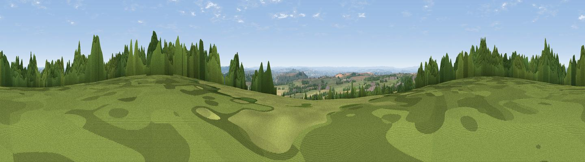

Cranmore Hill
#12362 in England · top 22% of its area beats it · near East CranmoreWhere it is
The exact computed spot (ST 67025 45075). Click the marker for map links.
The view, rendered

A 360° render of this exact spot computed from the terrain model, tree cover and land cover — summer colours, afternoon light, calibrated against photographs of famous viewpoints. Real trees, hedges and buildings will differ in detail.
The panorama
Grey silhouette: terrain skyline in each direction (720 bearings, Earth curvature and refraction included). Dashed green: skyline with trees (+15 m) and buildings (+8 m) as obstacles. Blue strip: how far the ground is visible on each bearing.
Where the view opens
Wedge length = distance to the farthest visible ground on that bearing (vegetation-aware). Rings at 10, 25 and 50 km.
What fills the view
53% grassland · 24% woodland · 19% cropland · 4% built-up
Angular shares of the visible panorama (visual magnitude), not map area. Landscape diversity 0.49 (0–1 Shannon).
Key numbers
More beautiful places nearby
The staircase of upgrades: each row has a higher view potential than everything closer. Driving times are estimates from straight-line distance, calibrated against real road routing — check an actual route before setting out.
| Place | Direction | Drive | Score |
|---|---|---|---|
| Viewpoint near Stoke St. Michael | NW · 1 km | ~2 min | 67.2 |
| Viewpoint near East Cranmore | ESE · 2 km | ~6 min | 69.2 |
| Viewpoint near Oakhill | WNW · 3 km | ~6 min | 71.3 |
| Viewpoint near Milton Clevedon | S · 8 km | ~17 min | 73.9 |
| Lamyatt Beacon | S · 9 km | ~18 min | 74.6 |
| Viewpoint near Lamyatt | S · 9 km | ~18 min | 77.8 |
| Beacon Batch | WNW · 22 km | ~37 min | 79.4 |
| Bleadon Hill [Loxton Hill] | WNW · 33 km | ~50 min | 79.6 |
51.20393, -2.47337 · source: dobih hill · position refined by local search. Computed location — check access rights before visiting.